好书荐读

国内名著小说
- 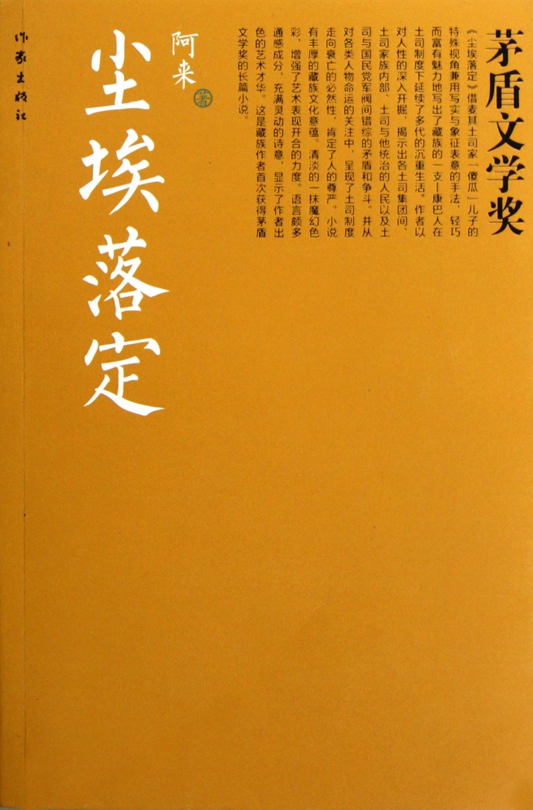
尘埃落定 阿来
小说讲述了一个声势显赫的藏族老麦其土司，在酒后和汉族太太生了一个傻瓜儿子。这个人人都认定的傻子与现实生活格格不入，然而就是这个傻子却有着超时代的预感和举止，不以常理出牌，在其余土司遍种罂粟时突然建议改种麦子，结果鸦片供过于求，无人问津，阿坝地区笼罩在饥荒和残废的阴影下。大批饥民投奔麦其麾下，麦其家族的领地和人口达到空前的规模，傻子少爷因此而娶到了美貌的妻子塔娜，也开辟了康巴地区第一个边贸集市......
- 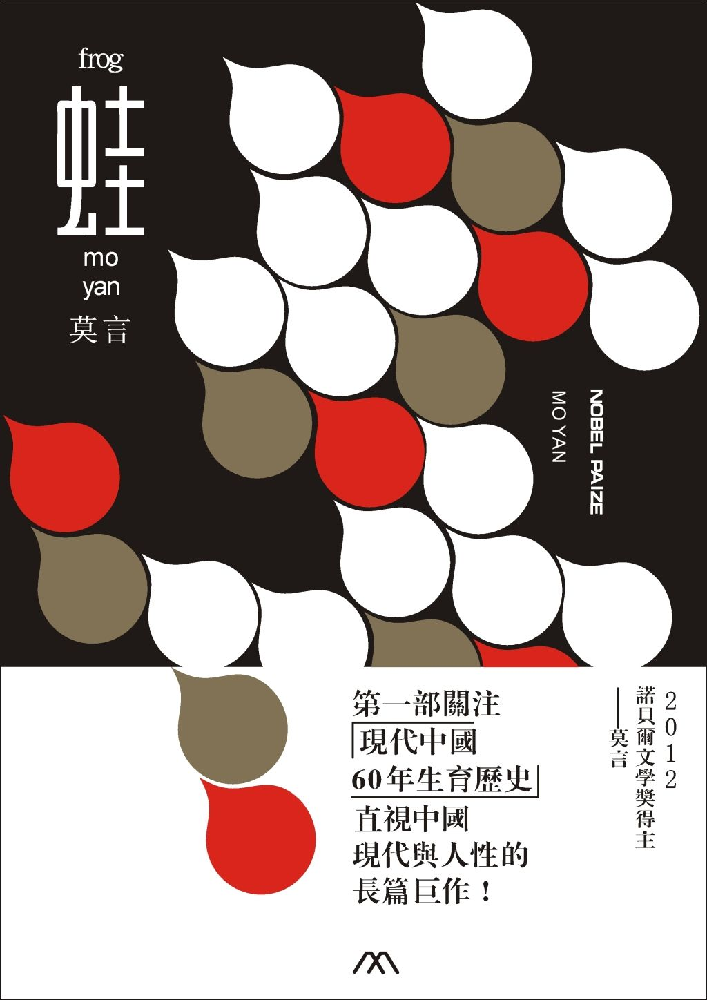
蛙 莫言
主要讲述的是乡村医生“姑姑”的一生。“姑姑”的父亲是八路军的军医，在胶东一带名气很大。“姑姑”继承衣钵，开始在乡村推行新法接生，很快取代了“老娘婆”们在妇女们心中的地位，用新法接生了一个又一个婴儿。“姑姑”接生的婴儿遍布高密东北乡，可丧生于“姑姑”之手的未及出世的婴儿也遍布高密东北乡。姑姑一面行医，一面带领着自己的徒弟们执行计划生育政策。让已经生育的男人结扎，让已经生育的怀孕妇女流产，成了“姑姑”的两件大事。
- 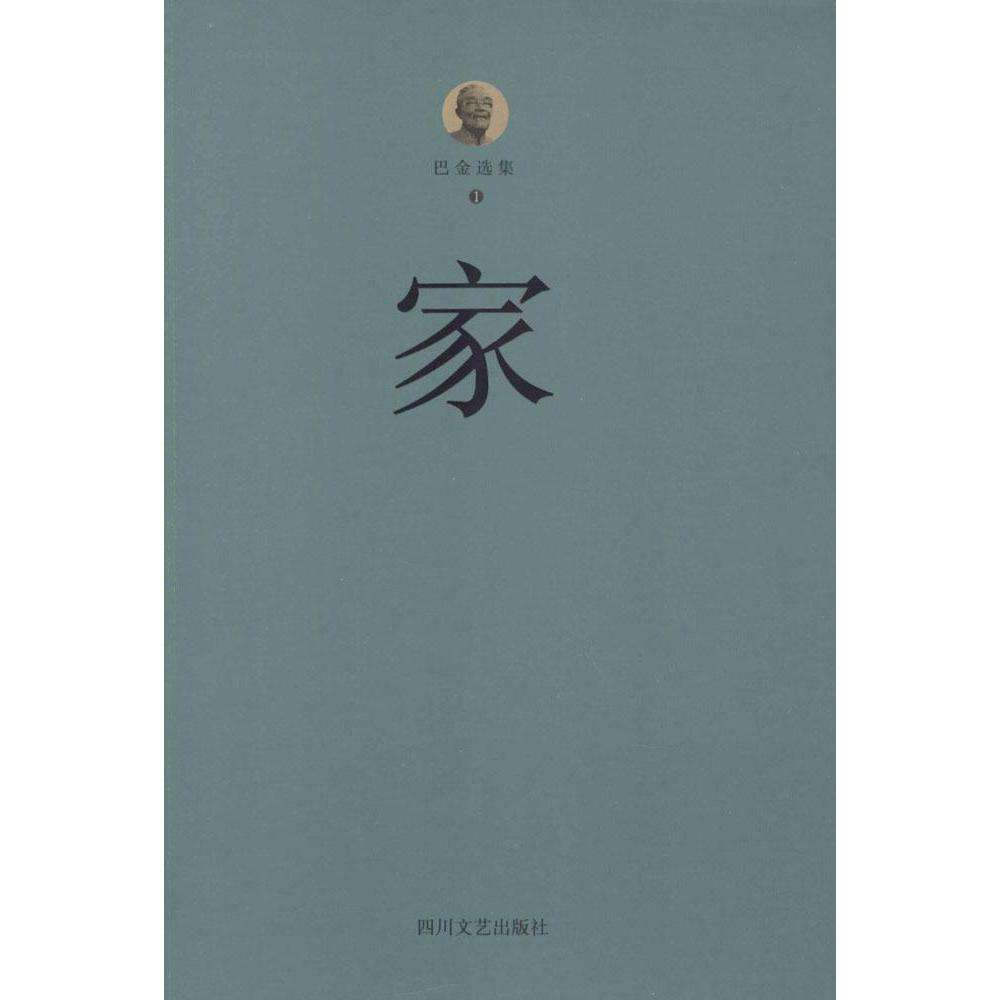
家 巴金
故事发生在成都一家姓高的大公馆里，高觉新是这个大家庭里的长孙，就是因为这个缘故，他被剥夺了学业与爱情。在中学毕业那天被迫放弃了自己所爱的能够了解他、安慰他的钱家表姐——钱梅芬，和父亲指定的姑娘结了婚，结婚后，觉新在父亲的安排下进入西蜀实业公司事务所上班，尔后不久父亲死去，觉新成为家中事物的承重者。 觉新的二弟觉民和三弟觉慧就不同了，他们接受西方文化知识的熏陶，有着先进的思想、昂扬的斗志，是新时代的新青年。觉新也跟他俩一起......
- 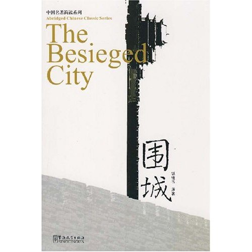
围城 钱钟书
围城故事发生于1920到1940年代。主角方鸿渐是个从中国南方乡绅家庭走出的青年人，迫于家庭压力与同乡周家女子订亲。但在其上大学期间，周氏患病早亡。准岳父周先生被方所写的唁电感动，资助他出国求学。 方鸿渐在欧洲游学期间，不理学业。为了给家人一个交待，方于毕业前购买了虚构的“克莱登大学”的博士学位证书，并随海外学成的学生回国。在船上与留学生鲍小姐相识并热恋，但被鲍小姐欺骗感情。同时也遇见了大学同学苏文纨......
-
活着 余华
《活着》讲述一个人一生的故事，这是一个历尽世间沧桑和磨难老人的人生感言，是一幕演绎人生苦难经历的戏剧。小说的叙述者“我”在年轻时获得了一个游手好闲的职业——去乡间收集民间歌谣。在夏天刚刚来到的季节，遇到那位名叫福贵的老人，听他讲述了自己坎坷的人生经历： 地主少爷福贵嗜赌成性，终于赌光了家业一贫如洗，穷困之中福贵因母亲生病前去求医，没想到半路上被国民党部队抓了壮丁，后被解放军所俘虏，回到家乡他才知道母亲已经过世......
- 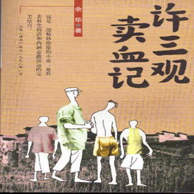
许三观卖血记 余华
《许三观卖血记》共29章，讲述了一个叫许三观的丝厂送茧工在生活困难的年代多次卖血求生的故事。他第一次卖血是出于好奇，为了证明自己的身体结实。第二次卖血是因为他的大儿子一乐打伤了方铁匠的儿子，他不赔钱，方铁匠就带人拉走了许家的东西，无奈，只好再一次去卖血。第三次卖血是因为他一直暗中喜欢的女工林芬芳踩上西瓜皮摔断了右脚，他趁虚而入，终于如愿以偿地得到了自己的初恋情人，为了报答她的好心，让她吃到“肉骨头炖黄豆”，早日痊愈，于是......
- 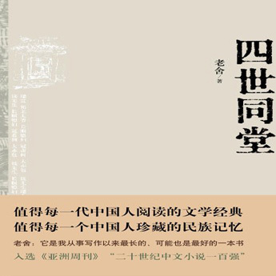
四世同堂 老舍
《四世同堂》是中国作家老舍创作的一部百万字的小说，是表现抗战北平沦陷区普通民众生活与抗战的长篇小说，全书共三部。 该书以北平小羊圈胡同为背景，通过复杂的矛盾纠葛，以胡同内的祁家为主，钱家、冠家以及其他居民为辅，刻画了当时社会各阶层众多普通人的形象；反抗与顺从的选择，国家与个人的选择种种艰难的选择纷繁地交织在一起，深刻地展示了普通人在大时代历史进程中所走过的艰难曲折的道路。
- 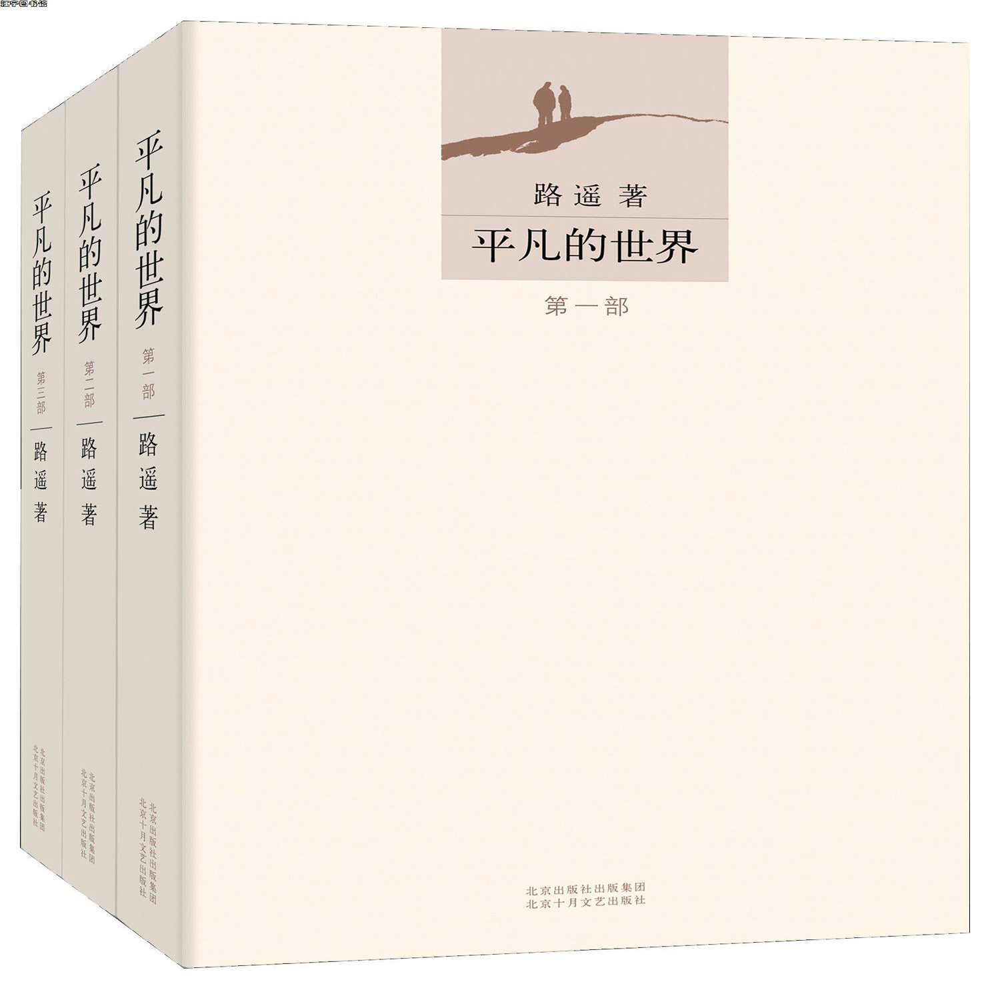
平凡的世界 路遥
这是一部全景式地表现中国当代城乡社会生活的长篇小说，全书共三部。 该书以中国70年代中期到80年代中期十年间为背景，通过复杂的矛盾纠葛，以孙少安和孙少平两兄弟为中心，刻画了当时社会各阶层众多普通人的形象；劳动与爱情、挫折与追求、痛苦与欢乐、日常生活与巨大社会冲突纷繁地交织在一起，深刻地展示了普通人在大时代历史进程中所走过的艰难曲折的道路。 1991年3月份《平凡的世界》获中国第三届茅盾文学奖。
国外名著小说
- 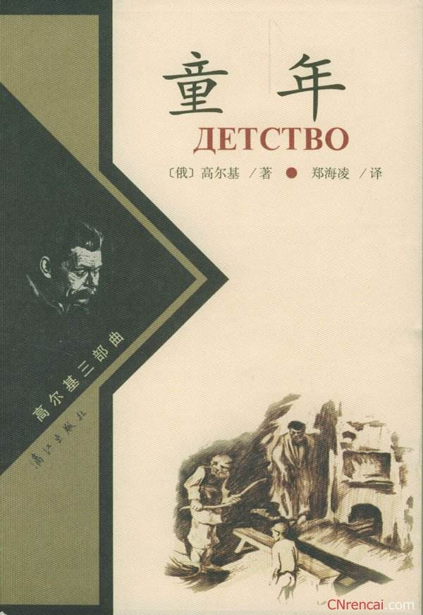
童年 高尔基
阿廖沙三岁时，失去了父亲，母亲瓦尔瓦拉把他寄养在外祖父卡什林家。外祖父家住在尼日尼——诺弗哥罗德城。外祖父年轻时，是一个纤夫，后来开染坊，成了小业主。阿廖沙来到外祖父家时，外祖父家业已经开始衰落，由于家业不景气，外祖父变得也愈加专横暴躁。阿廖沙的两个舅舅米哈伊尔和雅科夫为了分家和侵吞阿廖沙母亲的嫁妆而不断地争吵、斗殴。在这个家庭里，阿廖沙看到人与人之间弥漫着仇恨之雾，连小孩也为这种气氛所毒害。阿廖沙一进外祖父家就不喜欢外祖父...
- 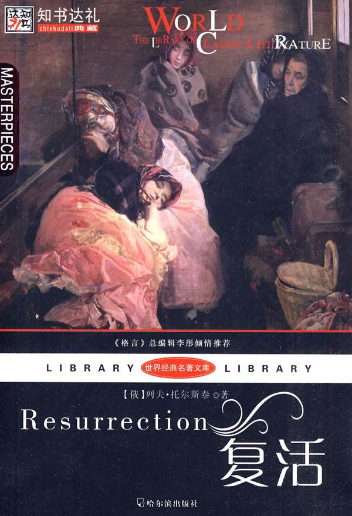
复活 列夫·托尔斯泰
德米特里·伊万诺维奇·聂赫留朵夫公爵一次偶然的机会作为陪审员参加审理一个毒死人的命案。不料，从妓女玛丝洛娃具有特色的眼神中认出原来她是他青年时代热恋过的卡秋莎。于是往象一幕幕展现在聂赫留朵夫眼前：当时他还是一个大学生，暑期住在姑妈的庄园里写论文。他善良，热情，充满理想，热衷于西方进步思想，并爱上了姑妈家的养女兼婢女卡秋莎。他们一起玩耍谈天，感情纯洁无瑕。三年后，聂赫留朵夫大学毕业，进了近卫军团，路过姑妈庄园，再次见到了...
-
傲慢与偏见 简·奥斯汀
小乡绅班纳特有五个待嫁闺中的千金，班纳特太太整天操心着为女儿们物色称心如意的丈夫。新来的邻居宾利是个有钱的单身汉，他立即成了班纳特太太追猎的目标。在一次舞会上，宾利对班纳特家的大女儿简一见钟情，班纳特太太为此欣喜若狂。 参加舞会的还有宾利的好友达西。他仪表堂堂，非常富有，收入是宾利的数倍，许多姑娘纷纷向他投去羡慕的目光；但他非常骄傲，认为她们都不配做他的舞伴，其中包括简的妹妹伊丽莎白。
- 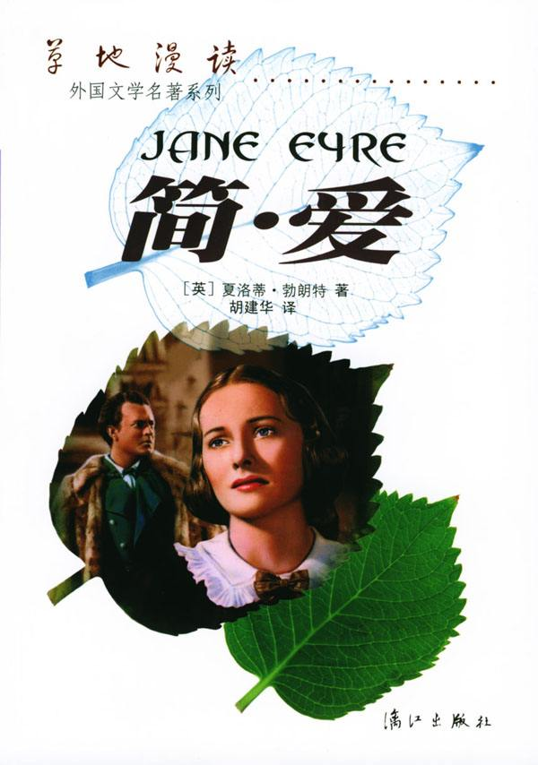
简·爱 夏洛蒂·勃朗特著
简·爱是个孤女，她出生于一个穷牧师家庭。不久父母相继去世。幼小的简·爱寄养在舅父母家里。舅父里德先生去世后，简·爱过了10年倍受尽歧视和虐待的生活。舅母把她视作眼中钉，并把她和自己的孩子隔离开来，从此，她与舅母的对抗更加公开和坚决了，简被送进了罗沃德孤儿院。 孤儿院教规严厉，生活艰苦，院长是个冷酷的伪君子。简·爱在孤儿院继续受到精神和肉体上的摧残。
- 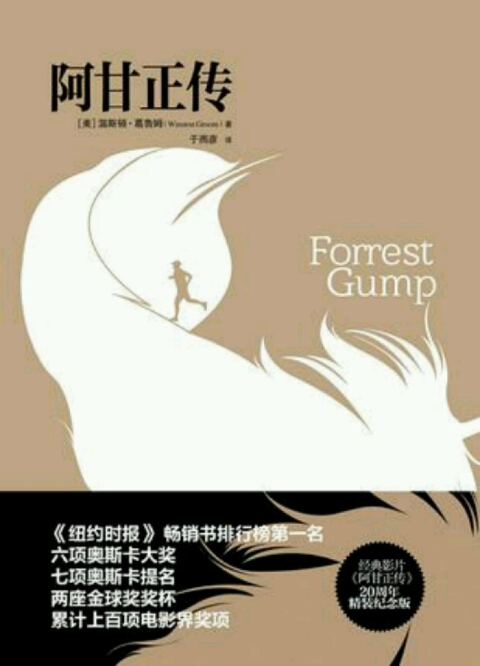
阿甘正传 温斯顿·葛鲁姆
阿甘是常人眼中的弱智和白痴，但他天性善良单纯，加上天赋异禀，使他先后成为大学美式足球明星、越战英雄、世界级乒乓球运动员、摔跤选手、国际象棋大师和商业大亨，既获得肯尼迪总统的接见，约翰逊总统的授勋，甚至还无意间发现了水门事件的真相！阿甘轰轰烈烈的传奇一生，看似茺诞不经，其实正是五十年代到七十年代美国历史与社会的缩影，透过阿甘的眼睛，也让我们看到了世态的险恶复杂与庸俗市侩，而更觉人性真诚的可贵。
-
茶花女 亚历山大·小仲马
玛格丽特原来是个贫苦的乡下姑娘，来到巴黎后，开始了卖笑生涯。由于生得花容月貌，巴黎的贵族公子争相追逐，成了红极一时的“社交明星”。她随身的装扮总是少不了一束茶花，人称“茶花女”。 茶花女得了肺病，在接受矿泉治疗时，疗养院里有位贵族小姐，身材、长相和玛格丽特差不多，只是肺病已到了第三期，不久便死了。小姐的父亲裘拉第公爵在偶然发现玛格丽特很像他女儿，便收她做了干女儿。玛格丽特说出了自己的身世，公爵答应只要她能改变自己过去的生活...
- 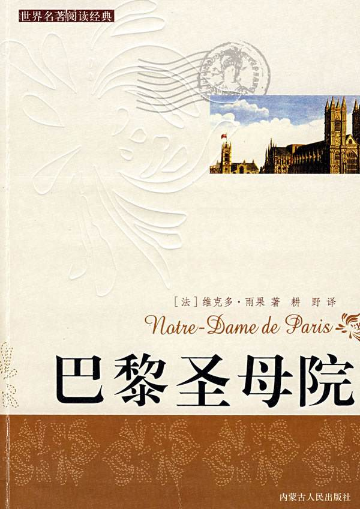
巴黎圣母院 维克多·雨果
5世纪的巴黎，在愚人节那一天。巴黎民众抬着残废畸形的“愚人之王”——巴黎圣母院的敲钟人卡西莫多，在圣母院前面的格莱夫广场上欢呼游行。吉普赛少女爱斯梅拉达带着一只小羊跳舞卖艺，穷诗人甘果瓦被她的美貌和舞姿迷住了。他在夜里听到她动人的歌声，情不自禁的跟随着她这时忽然跳出两个男人把她劫走了，他认出其中一个就是其丑无比的卡西莫多，被卡西莫多打昏。 甘果瓦醒来后跌跌撞撞，在黑暗中误入了“奇迹宫”的大厅......
-
战争与和平 列夫·托尔斯泰
1805年，在拿破仑率兵征服欧洲之后，法国和俄国之间也发生了战争。可是在俄国上层社会，人们的生活依旧恬静悠闲，社交舞会照常举行。青年公爵安德烈·保尔康斯基把已有身孕的妻子交给退隐于领地“秃山”的父亲及妹妹玛丽娅之后，就担任库图佐夫将军的副官，向前线出发去了，他希望这次战争能为自己带来辉煌与荣耀。 安德烈刚刚留学归来的好友皮埃尔·别祖霍夫，是莫斯科数一数二的资本家...
拓展视野
- 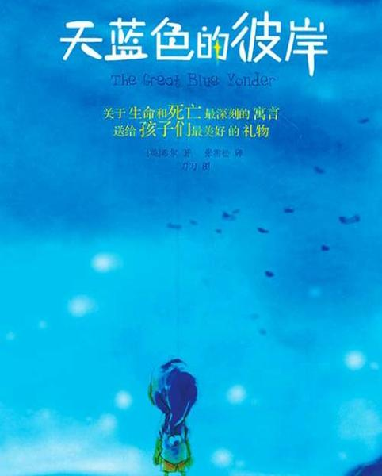
天蓝色的彼岸 艾利克斯・希尔
小男孩哈里经常和姐姐雅丹吵架，还管姐姐叫鸭蛋。一天他们又吵架了，哈里生气地对姐姐说：“我恨你，我再也不回来了。”然后就出门去买铅笔，结果被卡车撞倒而死去。哈里单纯可爱的灵魂如云朵般飘向了天堂，在天堂里遇到了古代的幽灵男孩子阿瑟。阿瑟拿着一枚纽扣在天堂里苦苦地徘徊，而不去天蓝色的彼岸重新轮回，是因为他要在天堂里凭借一枚纽扣寻找到妈妈，但到了他赶往天蓝色彼岸的时候，也始终没有找到妈妈...
-
少有人走的路 斯科特·派克
这本书处处透露出沟通与理解的意味，它跨越时代限制，帮助我们探索爱的本质，引导我们过上崭新，宁静而丰富的生活；它帮助我们学习爱，也学习独立；它教诲我们成为更称职的、更有理解心的父母。归根到底，它告诉我们怎样找到真正的自我。 正如开篇所言：人生苦难重重。M·斯科特·派克让我们更加清楚：人生是一场艰辛之旅，心智成熟的旅程相当漫长。但是，他没有让我们感到恐惧，相反，他带领我们去经历一系列艰难乃至痛苦...
- 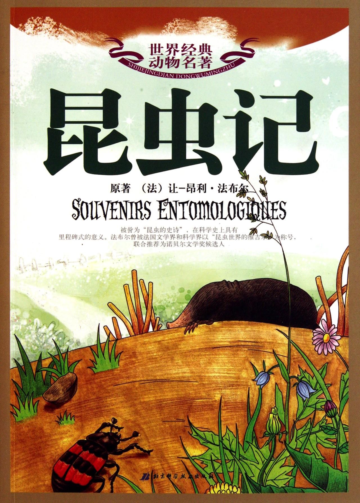
昆虫记 让-亨利·卡西米尔·法布尔
依据其毕生从事昆虫研究的经历和成果，以人性化观照虫性，以虫性反应社会人生。用通俗易懂、生动有趣和散文的笔调，深入浅出地介绍了他所观察和研究的昆虫的外部形态、生物习性，真实地记录了几种常见昆虫的本能、习性、劳动、死亡等，既表达了作者对生命和自然的热爱和尊重，又传播了科学知识，体现了作者观察细致入微、孜孜不倦的科学探索精神。
- 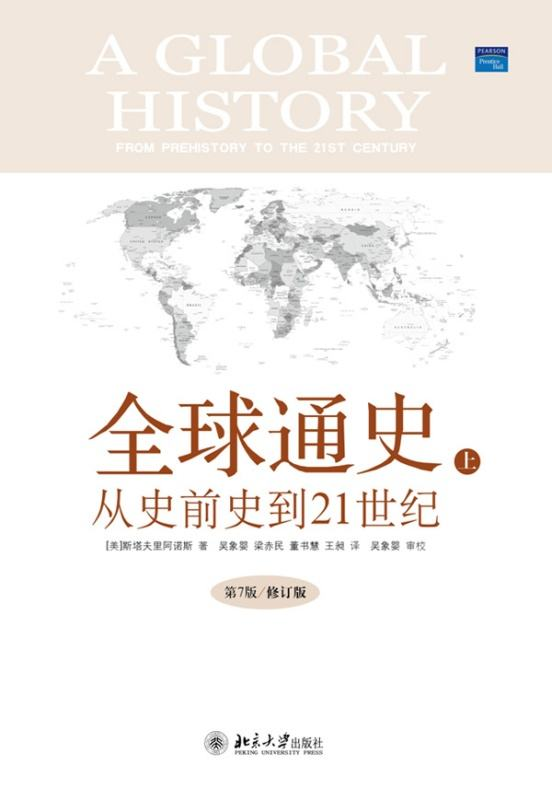
全球通史 斯塔夫里阿诺斯
将整个世界看做一个不可分割的有机的统一体，从全球的角度而不是某一国家或某一地区的角度来考察世界各地区人类文明的产生和发展，把研究的重点放在对人类历史事件和它们之间的相互关联和相互影响上，努力反映局部与整体的对抗以及它们之间的相互作用。全书材料新、范围广，除了政治、经济外，还涉及军事、文化、教育、宗教、科学技术等各个方面，并吸收了20年来世界历史学研究诸领域的新成就，读来颇觉新颖，有强烈的现实感
- 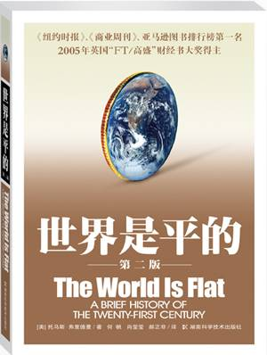
世界是平的 托马斯·弗里德曼
托马斯·弗里德曼描述了当代世界发生的重大变化。科技和通信领域如闪电般迅速的进步，使全世界的人们可以空前地彼此接近--在印度和中国创造爆炸式增长的财富;挑战我们中的一些人，比他们更快占领地盘。本书3.0版新增两章，更新了报告和注释方面的内容，这些内容均采自作者考察世界各地特别是整个美国中心地带的见闻，在美国本土，世界的平坦化正在剧烈地改变人们的生活方式。
- 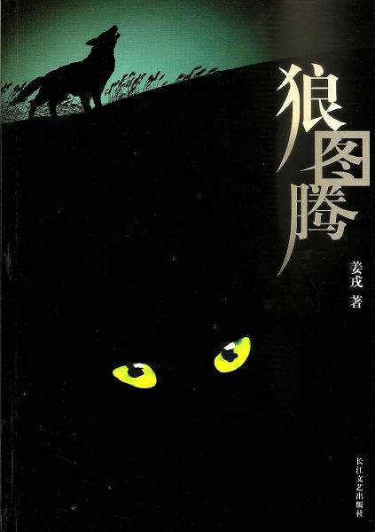
狼图腾 姜戎
故事的背景发生在20世纪60年代末，中国大陆内蒙古最后一块靠近边境的原始草原。这里的蒙古牧民还保留着游牧民族的生态特点，他们自由而浪漫地在草原上放养着牛、羊，与成群的强悍的草原狼共同维护着草原的生态平衡。他们憎恨着狼――狼是侵犯他们家园的敌人；他们同时也敬畏着狼――草原狼帮助蒙古牧民猎杀着草原上不能够过多承载的食草动物：黄羊、兔子和大大小小的草原鼠。草原狼是蒙古民族的原始图腾。狼的凶悍、残忍、智慧和团队精神，狼的军事才能和...
- 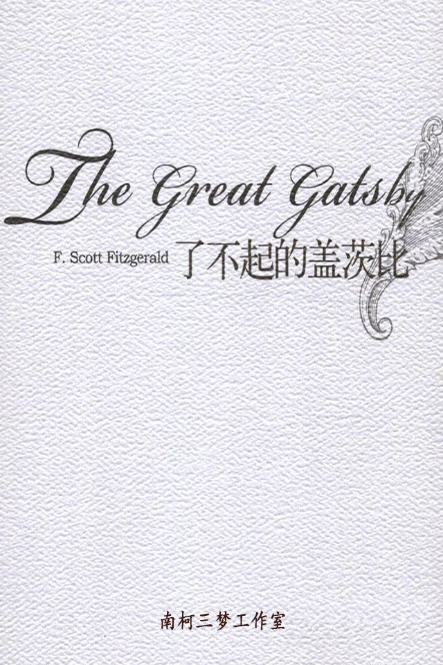
了不起的盖茨比 弗·司各特·菲茨杰拉德
尼克从中西部故乡来到纽约，在他住所旁边正是本书主人公盖茨比的豪华宅第。这里每晚都在举行盛大的宴会。尼克和盖茨比相识，故事就这样开始了。 尼克对盖茨比充满探究的兴趣。探究的结果是：尼克了解到盖茨比内心深处有一段不了之情。年轻时的盖茨比并不富有，他是一个少校军官。他爱上了一位叫黛茜的姑娘，黛茜对他也情有所钟。后来第一次世界大战爆发，盖茨比被调往欧洲。似是偶然却也是必然，黛茜因此和他分手...
- 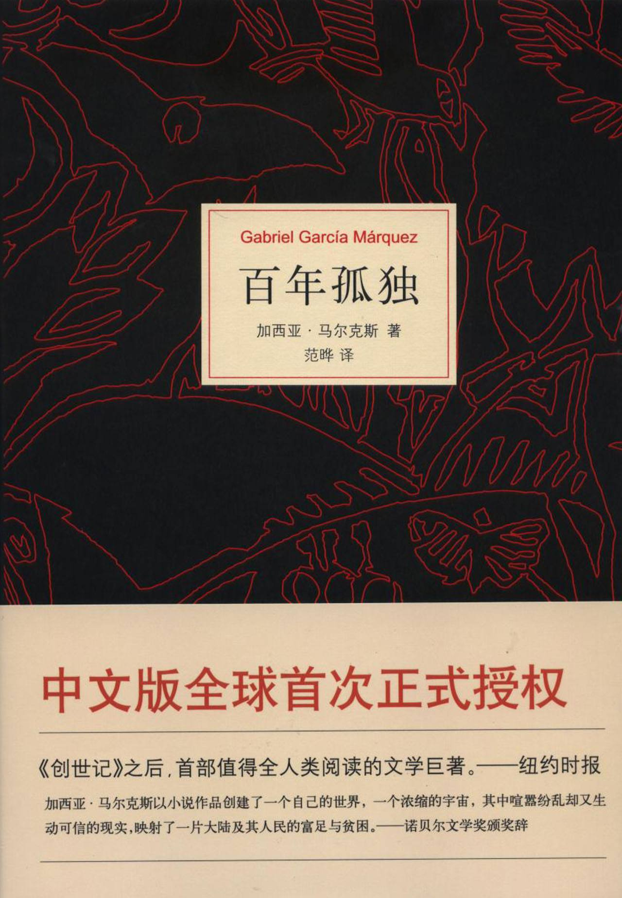
百年孤独 加西亚·马尔克斯
《百年孤独》，是哥伦比亚作家加西亚·马尔克斯的代表作，也是拉丁美洲魔幻现实主义文学的代表作，被誉为“再现拉丁美洲历史社会图景的鸿篇巨著”。作品描写了布恩迪亚家族七代人的传奇故事，以及加勒比海沿岸小镇马孔多的百年兴衰，反映了拉丁美洲一个世纪以来风云变幻的历史。作品融入神话传说、民间故事、宗教典故等神秘因素，巧妙地糅合了现实与虚幻，展现出一个瑰丽的想象世界，成为20世纪最重要的经典文学巨著之一。